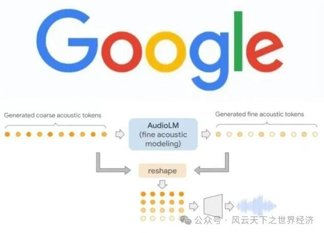
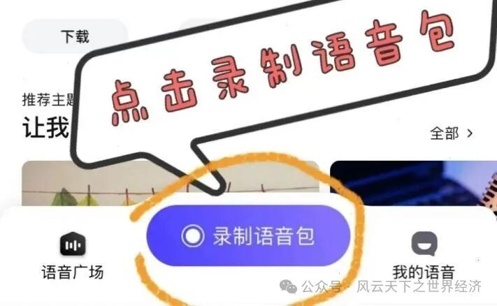
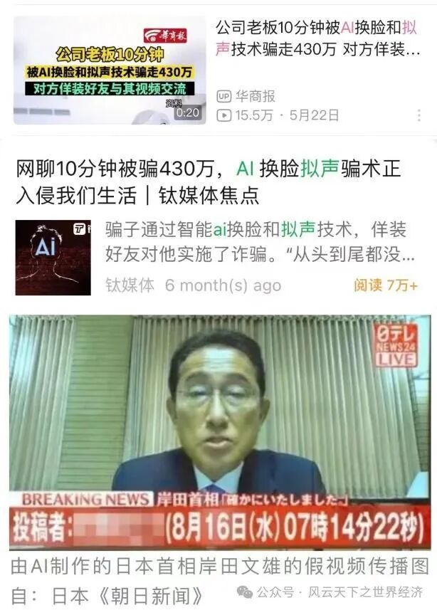

一、AI声声浪起，驳船去向何方？
声音，物理学意义上的一种波，也是人们交流的媒介。“同声相应”，声音相同，人们就互相影响、感应。但当另一个人、甚至另一物质发出与你同样的声音，这样的声音，还能激发灵感，与其他声音同频共振吗？
前不久，“AI孙燕姿”刷屏Bilibili视频网站。因其声音特点明显、吐字清晰，她率先为“AI音乐界”所青睐。据不完全统计，仅在b站，“AI孙燕姿”就翻唱了超过100首不同原唱、不同风格的歌曲，其中翻唱周杰伦的《发如雪》，更是接近300万播放量。
AI孙燕姿与AI周杰伦
这便是AI语音合成技术的力量。该技术的起源可以追溯到18世纪，人们使用机械装置来模拟合成人类发声；1980年，KLATT发布了共振峰合成器；1990年，由于计算机的运算量、存储量等方面的巨大进步，基于大语料库的单元挑选与波形拼接合成方法逐渐成熟，原始声音被高质量保存；随着人工智能技术的不断发展，基于深度学习的语音合成技术逐渐被人们所知，DNN/CNN等多种神经网络结构被用于语音合成系统的训练，种类繁多的拟声方式涌现，智能语料库也日益受到学者与商人们的关注。
国外语音合成技术的研究走出了两条路，一条路以Naoto为代表，通往模型与算法的完善；另一条路以NoeTits（2020）领衔，关注对感知的分析，从语音中提炼感情发声；而国内的研究方向已日益向人文社科转变，注重钻研AI拟声的应用场景，而不是追求技术前沿——这与国内高速扩展的AI拟声市场息息相关。
尽管当下的AI歌手只是具备了模仿歌手音色的能力，但这已经足以让歌迷们兴奋不已；也有网友感受到了AI歌手们的可怕之处，“科技与狠活”之下，Ta是他/她吗？
当AI拟声的浪潮涌起，我们该何去何从？
二、“商业的宝库”

AudioLM
提及AI拟声领域的前沿企业，Google公司不容忽视。2022年，Google公司推出AudioLM，借助该模型，仅通过收听音频即可生成逼真的语音和音乐。相较之前的系统，AudioLM生成的音频在语音语法、音乐旋律等方面具有长时间的一致性和高保真度，且无需前期转录、标记音频训练数据，大大减轻了人力消耗。据悉，如今的AudioLM已远远超出了语音的范围，可以模拟任意音频信号；未来，该研究团队希望借助该程序创造更复杂的声音，或许我们曾经推崇的“一个人如一个乐队”，将被“一个AI即是一个乐队”替代。
视野打开，AI配音软件已然发达。如Adobe公司的VoCo、WaveNet，以及Google全新推出的Tacotron等，这些软件不仅又语音合成的功能，还能根据不同的情感和口音进行调整，让声音更加生动、自然。
高度发展的技术，必然带来广泛的商业使用。好莱坞电影大量引入AI配音，我们所熟悉的《星球大战》里，其中一位反派角色Kylo Ren的声音就是由AI合成的。AI语音合成这一商业模式，也已然成为一座正在开采的宝库。
1. 虚拟的“偶像”
与普通人的声音相比，明星的声音具有更高的经济价值。明星的高净值声音可以成为一种新的版权资本，将该声音制成智能语音餐品，能开创出智能语音产业的一个新的增长点。当下，明星的合成声音已大量应用于广告、影视剧、纪录片、动画片等。2017年我国首部AI配音的大型纪录片《创新中国》首映，该片使用语音合成技术再现了已故著名配音艺术家李易老师的声音，用“AI李易”之声进行配音，为观众带来了一场艺术的视听盛宴。明星身价昂贵，亲自配音成本较高，而AI合成明星的声音，制作商只需购买其音色的使用权，即可用AI虚拟明星的声音，推销产品、推广影片，不仅节约制作成本，还能极大激发粉丝群体的购买力。
虚拟偶像初音未来、洛天依
此外，部分明星由于档期过满、片酬过高等一系列问题，缺乏与粉丝的交流互动，而AI拟声的出现则填补了这一空缺。明星所属的经纪公司甚至没有版权阻力，便可借助AI技术合成明星的声音，利用这一声音与粉丝进行互动，这不仅有利于加强粉丝的粘性，还可以拉拢边缘路人，同时也降低了经纪公司的营销成本，可谓是“一箭三雕”。因此，明星-AI-粉丝这一模式在一定程度上促进了娱乐行业的良性运行。
2. 看不见的“朋友”
以AI语音合成技术为核心的智能语音技术在教育、客服、销售等领域有着广泛的应用前景。用户可以在各个产品中选择自己喜欢的声音，从而提升人机交互的感受。
智能音箱就是智能语音技术落地最为成功的产品之一，用户可以选择合成的语音作为智能音箱的系统音。走入家里，“小度小度”，百度旗下的智能音箱便会用我们所喜爱的声音回答“诶，我在”。何等智能？它能为我们提供聊天、讲笑话等服务，也能利用语音控制家电，如空调温度、电视开关，同时还能帮助我们语音查询天气、股市、汇率、交通状况等。
在电商平台中，智能客服已经成为主要的工作人员。电话咨询，我们首先联系到的并不是真人，而是嗓音甜美清晰的智能AI女性客服。一方面，智能客服以大数据库为依托，能针对用户问题快速匹配最佳答案，回应清晰标准，服务效率高；另一方面，智能客服全天候、无死角、无休式的服务，可大大降低商家的营运成本。此外，智能客服还能有效克服人工客服质量参差不齐、流动性大、用户体验感差等问题。
3. 你的“知心人”

高德订制语音
智能语音技术准入门槛不断降低，推动AI语音合成技术进入大众化使用阶段。通过录制一定量的语音样本数据，AI语音合成算法就可以合成出以假乱真的语音，短则几分钟，长则几小时。高德导航推出私人语音定制导航，用户根据索引录入数十句语音样本，系统便打造出个性化的定制语音。“前方20米左转”“您已偏离航线，正在为您重新规划”……陌生的街巷，为我们引航的却是自己的声音，令我们感到奇妙又安心。
随着社会经济的不断发展，人们对定制化、个性化商品的需求愈发强烈，个性化定制出内心的声音，使Ta成为你的“知心人”，也是AI拟声发展的大势所趋。以高德导航为例，即使现如今该模式尚未对用户进行收费，但不难看出这一模式在未来具有良好的商业前景。
除以上范例外，AI合成的声音也大量用于手机语音助手、有声读物、影视剧配音、汽车导航、销售客服等产品中。声音元素商业价值的开发、智能语音产业的扩大，将进一步促进AI语音合成技术的研发和创新，形成良性循环。
三、险滩与礁石
瀚海行船会遇到礁石，AI拟声的巨轮也难免短暂搁浅。在这些商业范式的发展中，总会遇到不少难以避免的问题。
1. 为你歌唱的，必须是人吗？
在传统影音行业的期望里，AI语音合成技术可以在艺人空窗期满足粉丝需要的消遣，是一项“互补品”，这是制作公司与艺人的理想状态；但若放任此趋势发展，AI拟声大有抢占艺人市场的态势，更像是一件“替代品”。换句话说，为你唱歌的，必须是人吗？
我们仍记得19世纪那一场工业的燎原大火。起初只是纺纱机，它取代了无数传统的纺纱女工；再又是蒸汽动力，星星蒸汽的火焰将众多劳动力导向的传统产业燃烧殆尽；烈火蔓延，许多传统的手工业、农业经济遭到了破坏，大量劳动力被逼到了工厂。
从第一次工业革命到第二次工业革命，辗转又融入了第三次科技革命的洪流，成千上万的产业与职业更新迭代，而工业的火焰却从未间断。如今，科技熔铸下的AI之火又烧到了声音有关的行业领域，产生的影响虽不如工业革命猛烈，却也不能忽视。
大热手游《未定事件簿》中，热门角色“莫奕”的声优姜广涛锒铛入狱，游戏制作方引入AI技术出演后续配音。这一次，一度被认为“冷冰冰”、“缺乏温度”的AI，不仅模拟了原声优的音色，更分析了其中的情感表露方式，经一年时光的洗涤检验，受到了粉丝们源源不断的好评。
声优如此，推而广之，我们不难想象未来影视行业的发展态势。曾经独一无二的明星演员，他们的声音可以被模仿、他们的形象可以“换脸抠图”；作词作曲家们引以为傲的创作能力，也沦为了“Chatgpt”的“命题作文”，再加上AI拟声技术的加持，一首歌曲的诞生可以被迅速切割成几个步骤，交由不同类别的AI完成；这无需人类创作的“艺术”，也可以成为我们的审美享受。
那么，那些被AI语音仿真的原声，被Chatgpt取代的作者们又将何去何从？
2. 歌声属于谁？
悦耳的歌声可被替代，那么在“隔空传音”的流媒体时代，美妙的歌喉又属于谁？是谁在为我们唱歌？如果产权不能被清晰界定，那么科斯定理下的篱笆便不复存在，市场的功能必然出现紊乱。
如今的AI创作，尚且建立在明星的粉丝基础之上，明星及其团队还能从中汲取收益。可在这背后，侵权行为日益对这些收益构成威胁。对版权方来说，AI歌手的泛滥是一个对现有规则的挑战，就连那些“仅供娱乐而非商用”的视频，或多或少都会为AI之声的创作者带来收益，基数越大，收益值越高，而这些收益，又有多少能真正进入版权方的口袋？
当下，我国在法律上并没有对声音所有权进行立法，仅有一些非常笼统模糊的管理措施，很难对受侵犯的影音版权进行保护。由此看来，为实现AI拟声商业模式的长期稳定发展，我国版权领域的立法、AI声音合成技术的条例规范尚待进一步完善。
3. 唱歌的Ta，是你心中的他/她吗？
最后，我们最关心的，无疑还是那一句：Ta是他/她吗？我们曾期待着“梦幻联动”，但当AI孙燕姿大唱《好汉歌》时，不免还是产生了割裂感：她终究不是她。
AI声音合成技术，可以在某种意义上成为粉丝群体乃至大众的情感寄托。在喜爱的歌手的空窗期听他的“新歌”、的和无法触及的偶像对话、听到已故亲人的声音……或多或少，它能填补我们的情感空缺。但是短暂的喜悦过后，我们会陷入更大的失落：我们没有可能得到不属于我们的东西，也再难找回已经失去的家人。
有恶劣者，利用这一漏洞施行诈骗。模拟儿子的声音向其父母打电话索要“补课费”，伪造长辈的声音向晚辈推销产品，虚拟偶像的声音诱使粉丝为其“打榜”买单……这是市场乱象，也是大众辨识能力弱的体现。
AI拟声的滥用，进一步会带来政治隐患。我们可以设想一个场景，2024年美国总统大选正处于即将投票的白热化阶段，Youtube上忽然爆发式流传一段据说是偷录的特朗普竞选团队的内部录音，在这段录音内，特朗普用轻蔑地口吻诋毁了自己最大的盟友中下层工人，舆论哗然，结果特朗普选情急转直下，最终输掉选举。而事后经专业团队检验，这段录音仅仅是用AI语音合成的，于是美国大乱。

拟声诈骗与AI首相
这段故事看似荒唐无稽，类似的案例却真实上演。据日媒11月4日报道，日本一男子借助AI技术，完美虚拟日本首相岸田文雄的线上发布会境况，该视频在互联网上疯传。视频里岸田西装革履，声音与真人的声音如出一辙，几乎看不出AI痕迹。事后，该男子声称自己“只想搞笑”，视频也并未涉及重大政治内容。但倘若被有心人操纵利用，其下隐藏的政治隐患将充分暴露。避免成为拟声热潮之下的受害者，一方面，我们要提高辨识力，一方面，要加固自己的“心墙”，不要因为三两句“温言软语”，就落入行骗者的圈套；更不要盲目冲动，将AI娱乐与政治混为一谈，自封双耳。
Ta不是他/她，不能代替他/她发言，更不可能真正意义上成为他/她，AI理应是我们的消遣，而不是迷雾来模糊我们的双眼。
四、聆听风暴，自信弄潮
“可当我再次听到她的声音，我还是泪目了。”今年开年，b站一位up主借助AI语音合成技术，还原了已逝歌手姚贝娜的声音，并使其演唱了《流浪地球2》的主题曲《人是_》。“让死亡觊觎我！”，富有深意的歌词一出，不仅令我们想到了曾经那位与病魔勇敢抗争的姑娘。这一刻，“Ta究竟是不是她”还有那么重要吗？生者缅怀，收获的不仅是感动；于已故者而言，在她身后也让世人重新感受到了她的力量。正如该up主所言“我想给她完整的一生”。
AI声音合成技术，就如同塞壬海妖的歌声，甘甜如蜜，却也可蚀人性命。而处于发展浪潮之上的我们，绝不应闭目塞听，回避新态势的出现；而对于关心艺术创作的人们来说，应该在意的或许不是“我们是否会被取代”，而是“我们还可以做些什么”。
“我打赢了很多场仗，如今我要回到家乡，那塞壬的歌喉不足让我迷茫。”就让我们成为AI商业时代的“奥德修斯”，乘律法与信念的巨轮在大洋里弄潮。